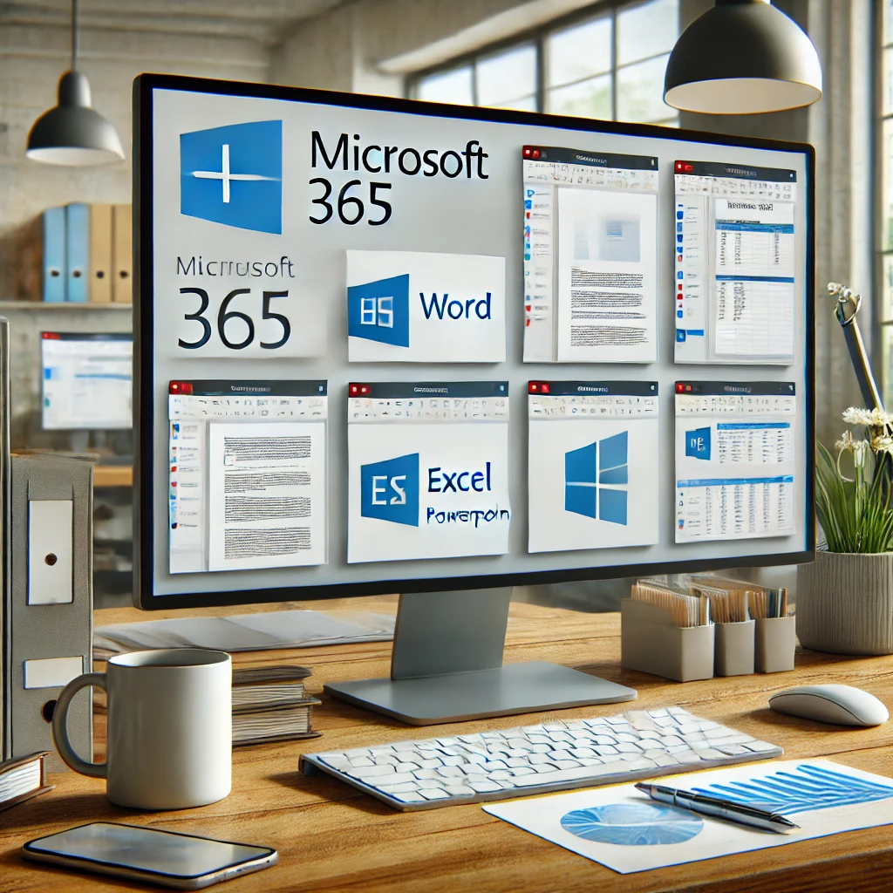

The Ultimate Guide to Microsoft 365
Microsoft 365 is a powerful suite of productivity tools designed to help individuals and businesses work more efficiently. In this comprehensive guide, we'll explore the features, benefits, and applications of Microsoft 365, and how it can revolutionize the way you work.
What is Microsoft 365?
Microsoft 365, formerly known as Office 365, is a subscription-based service that offers access to various Office applications such as Word, Excel, PowerPoint, and Outlook. Additionally, it provides cloud storage via OneDrive, making it easy to access your files from any device.
Key Features of Microsoft 365
- Access to Office applications like Word, Excel, PowerPoint, and Outlook.
- 1 TB of OneDrive cloud storage for secure file storage and sharing.
- Real-time collaboration with colleagues and friends using Teams.
- Advanced security features to protect your data and identity.
- Regular updates to ensure you have the latest features and security enhancements.
Why Choose Microsoft 365?
Microsoft 365 is more than just Office applications. It offers a range of tools designed to improve productivity, collaboration, and security. Whether you're working on a project with a team or managing your personal finances, Microsoft 365 has the tools you need to succeed.
For detailed information on one of the popular plans, check out our Microsoft 365 Personal page.
Collaboration Made Easy
With Microsoft Teams integrated into Microsoft 365, you can communicate, collaborate, and share files with your team in real-time. This makes it easy to stay connected and work together, no matter where you are.
Getting Started with Microsoft 365
If you're ready to take your productivity to the next level, consider starting with Microsoft 365. It's easy to set up, and with the wide range of applications and tools available, you'll have everything you need to work efficiently.
Conclusion
Microsoft 365 offers an unparalleled suite of tools designed to help you achieve more. Whether you're a student, professional, or business owner, Microsoft 365 can help you stay organized, collaborate effectively, and work smarter.